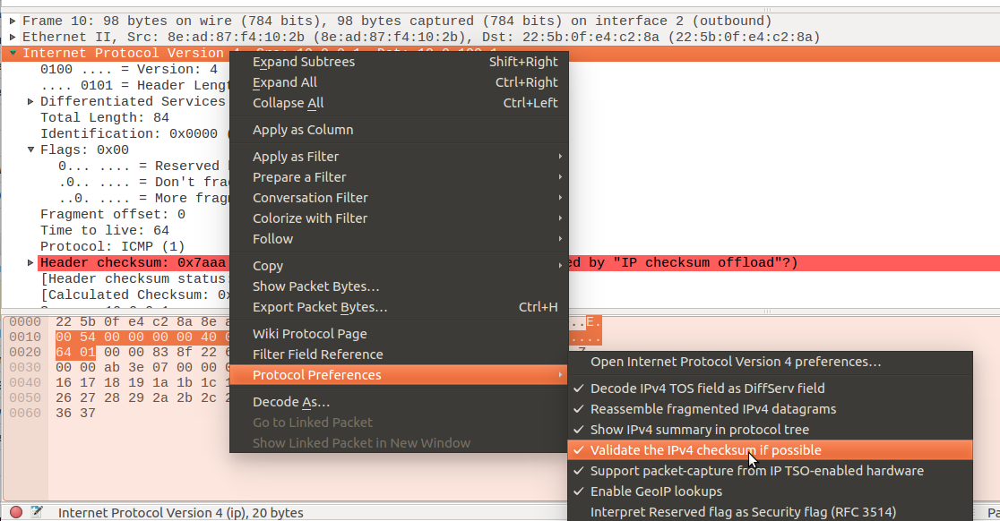

Project 3 Tips¶
Warning
Project 3 has not yet been updated for Autumn 2022. You are welcome to read through the project documentation, but bear in mind that some aspects of the project may change. Please do not start working on the project until instructed to do so in class.
Before you get started, make sure you’ve read through the Projects - Getting Started page.
Using the CS Virtual Machine¶
The mininet network simulator in Project 3 must be run with root privileges on a Linux machine. If you do not have access to such a machine, we recommend using the CS Virtual Machine (version 202122.2 or higher) to run mininet. This virtual machine will only work on computers with Intel processors so, if you are running a newer Mac with an M1 processor, please see our Ed Discussion site for instructions on how to set up a virtual machine on your computer.
Take into account that this doesn’t mean you have to do all your development work inside the virtual machine; you
will be able to continue to use your usual development environment (your laptop,
a CSIL machine, etc.). You will simply need to follow the instructions on
“Running chirouter and mininet on separate machines” in the chirouter documentation. Please note that,
when using the CS Virtual Machine, the HOST you must specify in the --chirouter parameter
to run-mininet is 10.0.2.2. This is the IP that, from inside the VM, will allow you to connect
to the host that is running the VM.
Please note that, for this to work, the Network settings for your VM (in VirtualBox) must indicate that “Adapter 1” is attached to NAT. This is the default value but, if you change this value, it will likely prevent chirouter and mininet from being able to communicate.
Resetting Mininet¶
If, at any point, Mininet starts behaving in an unexpected manner, specially if you see the following error message when running chirouter:
CRITIC Error while processing POX message.
CRITIC Error while receiving messages from POX
Try stopping chirouter and mininet, and then running this:
sudo mn -c
This will reset Mininet to a clean configuration. Next, try re-running the chirouter and mininet commands as usual.
Unexpected UDP packets on port 67¶
If you are running Mininet on your own machine (as opposed to inside a VM), certain traffic from your machine can leak into Mininet. Most notably, a Linux machine running Network Manager (as most Ubuntu distros do) will probably try to send DHCP requests (on UDP port 67) to the network interfaces created by Mininet, and these will show up in your logs. You can safely ignore them, but you may want to consider using our provided VM, which will provide a more controlled environment on which to run Mininet.
Always create protocol headers from scratch¶
Whenever you are creating a protocol header, it is good practice to create it from scratch, instead of trying to reuse an existing header. For example, suppose you receive an IP datagram that will cause an ICMP reply to be sent. You may be tempted to take the IP header, make any necessary modifications in-place, and create a new payload. This is very error-prone, specially if you do this at various points in your code. It is better to have a separate function that will create a new protocol header, forcing you to think about the exact values you need to provide in every field of the header, than to try to reuse existing headers.
Note: this does not apply to IP forwarding, where the existing IP header is kept largely intact, except for some well-defined modifications.
Using Wireshark to analyze the capture files¶
Every time you test your router, you should generate a capture file (using the -c option to chirouter,
not by doing a live capture) and then open it with Wireshark. If there are any issues in the Ethernet/IP/ICMP/ARP messages you are
generating, Wireshark will likely highlight them for you, which will make it easier to catch these
kind of issues.
Take into account that, by far, the most common issue is incorrectly computing a checksum somewhere. This issue is particularly hard to catch because, if you include an incorrect checksum somewhere, your message will be silently dropped by tools like ping, traceroute, etc. In other words, you may be doing every other step correctly (like forwarding an IP datagram through the correct interface) only to have your datagram silently rejected when it arrives at its destination.
However, take into account that IPv4 checksum validation is disabled by default in Wireshark. You can enable it like this:
Asking questions¶
Related to the above, if you need help with your code, please make sure to include a capture file in your question. While including relevant logs will also be helpful, a capture file will be much more useful in helping us diagnose the issue with your code.
Common Pitfalls¶
Computing a checksum over a pointer instead of what the pointer points to: Suppose you have the following variable:
iphdr_t *hdr;
And that you have malloc’d and populated the values in the IP header. A common mistake is to call the
cksumfunction like this:cksum(hdr, sizeof(hdr))
This will compute a checksum over 8 bytes, because
hdris a pointer, and its size is 8 bytes. Make sure you pass the correct size tocksum. For an IP header, you would callcksumlike this:cksum(hdr, sizeof(iphdr_t))
Computing ICMP header sizes: Related to the above, you cannot use
sizeof(icmp_packet_t), sinceicmp_packet_tis auniontype, and will likely yield an incorrect size. You should manually compute the size of your ICMP packet.Forgetting to use htons, htonl, etc.: Remember that the values in the protocol headers have to be in network order, and you must use functions like htons and htonl to convert from host order to network order (and ntohs and ntohl to convert from network order to host order)
… except with checksums: The
cksumfunction already produces a checksum in network order. There is no need to convert it from host order to network order.